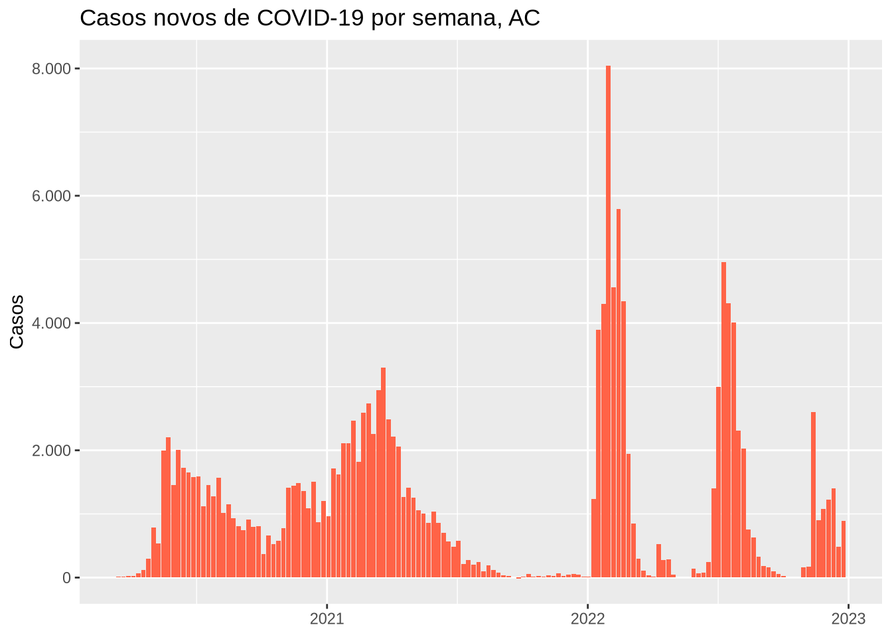

library(tidyverse)
library(here)
source(here("scripts", "preparar-sinasc.R"))
covid <- read_csv(here("dados", "covid_norte_2020_2022.csv"))16 Noções de programação: funções, condicionais e iteração
Encontro previsto: 8 (apresentação) e estudo autônomo · Pré-requisitos: Partes I a III · Pacotes: R base, purrr, dplyr, ggplot2
Objetivos de aprendizagem
Ao final deste capítulo, espera-se que o estudante seja capaz de reconhecer quando vale a pena transformar código repetido em uma função; escrever funções simples, com argumentos, valores padrão e verificação de entradas; controlar a execução com estruturas condicionais; repetir operações com laços for e com as funções de iteração do purrr; e aplicar essas ferramentas a tarefas recorrentes da análise de dados em saúde, como ler vários arquivos de uma vez ou produzir o mesmo gráfico para várias unidades.
16.1 Por que programar?
Quem chegou até aqui já vem programando desde o Capítulo 2. Cada script com uma sequência de comandos é um programa. O que este capítulo acrescenta são estruturas que tornam o código mais geral, para que ele possa ser reaproveitado em situações parecidas sem precisar ser copiado e alterado à mão.
Pense em um boletim epidemiológico semanal que mostra a curva de casos de cada um dos sete estados da região Norte. Uma forma de fazê-lo é escrever o código do gráfico para o Acre, copiá-lo, trocar “AC” por “AM”, e assim por diante. Funciona, mas tem problemas. Se for preciso mudar a cor do gráfico, a mudança terá de ser feita em sete lugares, e é fácil esquecer um deles. Se um erro for corrigido em uma cópia e não nas outras, os gráficos ficarão inconsistentes. Uma regra prática, sugerida no R para Ciência de Dados (WICKHAM; ÇETINKAYA-RUNDEL; GROLEMUND, 2023), é considerar escrever uma função sempre que um trecho de código tiver sido copiado e colado mais de duas vezes.
16.2 Escrevendo funções
Uma função é criada com function(). Entre os parênteses ficam os argumentos, e entre as chaves fica o corpo, isto é, o código que será executado. O resultado da última expressão do corpo é o valor devolvido pela função. O objeto criado recebe um nome, como qualquer outro objeto do R.
Como primeiro exemplo, vamos escrever uma função que calcula um coeficiente, como a incidência ou a mortalidade, a partir do número de casos e da população.
coeficiente <- function(casos, populacao, por = 100000) {
casos / populacao * por
}
coeficiente(casos = 150, populacao = 529544)
#> [1] 28.32626
coeficiente(casos = 150, populacao = 529544, por = 1000)
#> [1] 0.2832626O argumento por tem um valor padrão, 100 mil, usado quando ele não é informado. Os argumentos sem valor padrão, como casos e populacao, são obrigatórios. Como a função usa apenas operações vetorizadas, ela também funciona com vetores e, portanto, dentro de mutate().
tibble(
municipio = c("Porto Velho", "Ji-Paraná", "Ariquemes"),
obitos = c(2100, 520, 410),
populacao = c(529544, 128969, 107863)
) |>
mutate(mortalidade = coeficiente(obitos, populacao, por = 1000))
#> # A tibble: 3 × 4
#> municipio obitos populacao mortalidade
#> <chr> <dbl> <dbl> <dbl>
#> 1 Porto Velho 2100 529544 3.97
#> 2 Ji-Paraná 520 128969 4.03
#> 3 Ariquemes 410 107863 3.80Os números de óbitos desse exemplo são fictícios, e as populações são as estimativas do IBGE para 2019.
Uma boa função verifica se recebeu entradas válidas e, quando não recebe, interrompe a execução com uma mensagem clara. A função stopifnot() interrompe se alguma das condições for falsa, e stop() interrompe com uma mensagem escrita por nós.
coeficiente <- function(casos, populacao, por = 100000) {
if (!is.numeric(casos) || !is.numeric(populacao)) {
stop("Os argumentos `casos` e `populacao` devem ser numéricos.")
}
stopifnot(all(populacao > 0, na.rm = TRUE))
casos / populacao * por
}
coeficiente(150, "529544")
#> Error in `coeficiente()`:
#> ! Os argumentos `casos` e `populacao` devem ser numéricos.
coeficiente(150, 0)
#> Error in `coeficiente()`:
#> ! all(populacao > 0, na.rm = TRUE) is not TRUEA opção error: true foi usada neste bloco apenas para que o livro mostre as mensagens de erro. Os objetos criados dentro de uma função existem apenas enquanto ela é executada, em um ambiente local, e não aparecem no painel Environment. Isso evita que uma função altere, sem querer, objetos da sessão.
Uma função pode devolver mais de um valor, reunidos em um vetor, uma lista ou uma tabela. A função a seguir calcula uma proporção e seu intervalo de confiança de 95% pela aproximação normal, adequada quando o número de eventos não é muito pequeno.
proporcao_ic <- function(eventos, total, confianca = 0.95) {
p <- eventos / total
z <- qnorm(1 - (1 - confianca) / 2)
erro_padrao <- sqrt(p * (1 - p) / total)
tibble(
proporcao = p,
inferior = p - z * erro_padrao,
superior = p + z * erro_padrao
)
}
proporcao_ic(eventos = sum(nascidos_analise$baixo_peso), total = nrow(nascidos_analise))
#> # A tibble: 1 × 3
#> proporcao inferior superior
#> <dbl> <dbl> <dbl>
#> 1 0.0698 0.0667 0.0728A função qnorm() devolve o quantil da distribuição normal, que é 1,96 para 95% de confiança. O resultado é uma tabela de uma linha, o que facilita juntar resultados de vários grupos, como veremos adiante.
16.3 Execução condicional
A estrutura if executa um trecho de código apenas quando uma condição é verdadeira. Com else, define-se o que fazer quando ela é falsa, e com else if, encadeiam-se várias condições.
classificar_cobertura <- function(cobertura, meta = 95) {
if (is.na(cobertura)) {
"sem informação"
} else if (cobertura >= meta) {
"meta atingida"
} else if (cobertura >= meta - 15) {
"abaixo da meta"
} else {
"muito abaixo da meta"
}
}
classificar_cobertura(97)
#> [1] "meta atingida"
classificar_cobertura(72)
#> [1] "muito abaixo da meta"O if avalia uma única condição e espera receber um único valor TRUE ou FALSE. Se receber um vetor com vários valores, o R interrompe com um erro. Para classificar todos os elementos de um vetor ou de uma coluna, usamos as funções vetorizadas já vistas no Capítulo 6, if_else() e case_when().
coberturas <- c(97, 72, 88, NA)
case_when(
is.na(coberturas) ~ "sem informação",
coberturas >= 95 ~ "meta atingida",
coberturas >= 80 ~ "abaixo da meta",
.default = "muito abaixo da meta"
)
#> [1] "meta atingida" "muito abaixo da meta" "abaixo da meta"
#> [4] "sem informação"Em resumo, if controla o fluxo do programa (executar ou não um trecho de código), e if_else() e case_when() transformam vetores. Os valores de cobertura acima são fictícios, e a meta de 95% é usada apenas como exemplo.
16.4 Iteração com for
O laço for repete um trecho de código para cada elemento de um vetor. A cada repetição, a variável indicada antes de in assume o valor de um elemento.
for (uf in c("AC", "AP", "RR")) {
total <- covid |> filter(uf == .env$uf) |> summarise(casos = sum(casos_novos))
print(paste(uf, "teve", total$casos, "casos notificados entre 2020 e 2022"))
}
#> [1] "AC teve 158669 casos notificados entre 2020 e 2022"
#> [1] "AP teve 182516 casos notificados entre 2020 e 2022"
#> [1] "RR teve 181245 casos notificados entre 2020 e 2022"A expressão .env$uf indica ao dplyr que uf se refere ao objeto do ambiente, e não à coluna de mesmo nome da tabela. Sem ela, o filtro compararia a coluna com ela mesma, e todas as linhas seriam mantidas.
Quando o laço produz resultados que precisam ser guardados, a boa prática é criar antes o objeto de saída, com o tamanho certo, e preenchê-lo a cada repetição. A função seq_along() gera os índices 1, 2, 3… de um vetor, e é mais segura que 1:length(x), que falha quando o vetor está vazio.
ufs <- sort(unique(covid$uf))
obitos <- numeric(length(ufs))
for (i in seq_along(ufs)) {
obitos[i] <- sum(covid$obitos_novos[covid$uf == ufs[i]])
}
tibble(uf = ufs, obitos)
#> # A tibble: 7 × 2
#> uf obitos
#> <chr> <dbl>
#> 1 AC 2040
#> 2 AM 14418
#> 3 AP 2165
#> 4 PA 18953
#> 5 RO 7399
#> 6 RR 2180
#> 7 TO 4208Existe também o laço while, que repete enquanto uma condição for verdadeira e é útil quando não se sabe de antemão quantas repetições serão necessárias. Na análise de dados, ele é bem menos usado que o for.
Muitas vezes, o laço nem é necessário. O mesmo resultado acima é obtido, de forma mais simples, com group_by() e summarise(), que já repetem a operação para cada grupo. Funções vetorizadas e verbos do dplyr devem ser a primeira escolha, e os laços ficam para tarefas que não se encaixam nesse modelo, como ler arquivos ou salvar gráficos.
16.5 Programação funcional com purrr
O pacote purrr, parte do tidyverse, oferece uma alternativa aos laços: funções que aplicam outra função a cada elemento de um vetor ou de uma lista. A principal é map(), que devolve sempre uma lista.
map(c(10, 20, 30), sqrt)
#> [[1]]
#> [1] 3.162278
#>
#> [[2]]
#> [1] 4.472136
#>
#> [[3]]
#> [1] 5.477226As variantes com sufixo indicam o tipo do resultado: map_dbl() devolve um vetor numérico, map_chr(), um vetor de textos, e map_lgl(), um vetor lógico. A função aplicada pode ser escrita no próprio map(), de forma abreviada, com a notação \(x), que cria uma função anônima, sem nome.
map_dbl(ufs, \(x) sum(covid$obitos_novos[covid$uf == x]))
#> [1] 2040 14418 2165 18953 7399 2180 4208Um uso muito comum é a leitura de vários arquivos. Os dados dos sistemas de informação costumam vir em um arquivo por ano ou por estado, e é preciso ler todos e empilhá-los em uma única tabela. Para mostrar isso, vamos primeiro dividir a base de COVID-19 em um arquivo por estado, gravados em uma pasta temporária, simulando o que acontece quando baixamos os dados de cada estado separadamente.
pasta <- file.path(tempdir(), "covid_por_uf")
dir.create(pasta, showWarnings = FALSE)
covid |>
group_split(uf) |>
walk(\(dados) write_csv(dados, file.path(pasta, paste0("covid_", dados$uf[1], ".csv"))))
arquivos <- list.files(pasta, pattern = "\\.csv$", full.names = TRUE)
basename(arquivos)
#> [1] "covid_AC.csv" "covid_AM.csv" "covid_AP.csv" "covid_PA.csv" "covid_RO.csv"
#> [6] "covid_RR.csv" "covid_TO.csv"A função group_split() separa a tabela em uma lista com uma tabela por estado. A função walk() funciona como map(), mas é usada quando o que interessa é o efeito da função (gravar um arquivo, salvar um gráfico), e não o valor devolvido. Agora, vamos ler todos os arquivos e empilhá-los.
covid_lido <- arquivos |>
map(read_csv) |>
list_rbind()
nrow(covid_lido) == nrow(covid)
#> [1] TRUEA função list_rbind() empilha as tabelas de uma lista, como bind_rows(). Para guardar o nome do arquivo de origem em uma coluna, o que é útil quando o ano ou o estado só aparece no nome do arquivo, basta nomear os elementos da lista e usar o argumento names_to.
arquivos |>
set_names(basename) |>
map(read_csv) |>
list_rbind(names_to = "arquivo") |>
count(arquivo)
#> # A tibble: 7 × 2
#> arquivo n
#> <chr> <int>
#> 1 covid_AC.csv 1020
#> 2 covid_AM.csv 1024
#> 3 covid_AP.csv 1017
#> 4 covid_PA.csv 1019
#> 5 covid_RO.csv 1017
#> 6 covid_RR.csv 1016
#> 7 covid_TO.csv 1019Vale lembrar que a iteração sobre colunas já foi vista no Capítulo 7, com a função across(), que aplica a mesma operação a várias colunas de uma tabela.
16.6 Funções que usam dplyr e ggplot2
Quando escrevemos funções que recebem nomes de colunas e os usam dentro de verbos do dplyr ou do ggplot2, surge uma dificuldade: o R procura um objeto com aquele nome, e não uma coluna. A solução é envolver o argumento com chaves duplas, { }, que indicam que ele deve ser tratado como nome de coluna.
resumo_por <- function(dados, grupo, variavel) {
dados |>
filter(!is.na({{ grupo }})) |>
group_by({{ grupo }}) |>
summarise(
n = n(),
media = mean({{ variavel }}, na.rm = TRUE),
desvio_padrao = sd({{ variavel }}, na.rm = TRUE)
)
}
resumo_por(nascidos_analise, faixa_idade_mae, peso)
#> # A tibble: 3 × 4
#> faixa_idade_mae n media desvio_padrao
#> <fct> <int> <dbl> <dbl>
#> 1 Menos de 20 4558 3163. 536.
#> 2 20 a 34 19327 3262. 537.
#> 3 35 ou mais 3143 3243. 593.
resumo_por(nascidos_analise, escmae, idademae)
#> # A tibble: 5 × 4
#> escmae n media desvio_padrao
#> <fct> <int> <dbl> <dbl>
#> 1 Nenhuma 40 31.6 8.62
#> 2 1 a 3 anos 516 28.4 7.38
#> 3 4 a 7 anos 4760 24.6 6.81
#> 4 8 a 11 anos 15633 25.2 6.05
#> 5 12 anos ou mais 5767 29.5 5.37Quando o nome da coluna está guardado em um texto, como acontece em um laço, usa-se .data[[nome]], como fizemos no estudo de caso do Capítulo 15. Esse tema é tratado em detalhe no capítulo 25 do R para Ciência de Dados (WICKHAM; ÇETINKAYA-RUNDEL; GROLEMUND, 2023).
16.7 Estudo de caso: automatizando um boletim por estado
Vamos juntar as ferramentas do capítulo para produzir, de forma automática, a curva epidêmica semanal de casos de COVID-19 de cada estado da região Norte. O primeiro passo é escrever uma função que recebe a sigla de um estado e devolve o gráfico.
curva_epidemica <- function(sigla, dados = covid) {
dados |>
filter(uf == sigla) |>
mutate(semana = floor_date(data, "week", week_start = 7)) |>
group_by(semana) |>
summarise(casos = sum(casos_novos)) |>
ggplot(aes(x = semana, y = casos)) +
geom_col(fill = "#ff6347") +
scale_y_continuous(labels = scales::label_number(big.mark = ".")) +
labs(title = paste("Casos novos de COVID-19 por semana,", sigla),
x = NULL, y = "Casos")
}curva_epidemica("AC")
curva_epidemica() para o Acre.
Com a função pronta, produzir os gráficos de todos os estados é uma única linha. Usamos walk() porque o objetivo é salvar os arquivos, e não guardar os gráficos. Em um projeto real, a pasta de destino seria resultados/, e não uma pasta temporária.
pasta_graficos <- file.path(tempdir(), "graficos")
dir.create(pasta_graficos, showWarnings = FALSE)
walk(ufs, \(sigla) ggsave(
filename = file.path(pasta_graficos, paste0("curva_", sigla, ".png")),
plot = curva_epidemica(sigla),
width = 8, height = 4, dpi = 150
))
list.files(pasta_graficos)
#> [1] "curva_AC.png" "curva_AM.png" "curva_AP.png" "curva_PA.png" "curva_RO.png"
#> [6] "curva_RR.png" "curva_TO.png"Se amanhã for preciso mudar a cor, o título ou o período, a mudança é feita em um único lugar, a função, e todos os gráficos são refeitos de uma vez. Esse é o ganho da programação: menos repetição, menos erros e mais tempo para o que importa, que é a interpretação dos dados.
16.8 Exercícios
Fixação
Escreva uma função
imc()que recebe o peso, em quilogramas, e a altura, em metros, e devolve o índice de massa corporal. Acrescente uma verificação que interrompa a execução se a altura for maior que 3, sugerindo que ela pode ter sido informada em centímetros.Escreva uma função que receba uma idade em anos e devolva a faixa etária (“criança”, “adolescente”, “adulto” ou “idoso”) usando
ifeelse if. Depois, reescreva-a comcase_when()para que funcione com vetores.Use um laço
fore depoismap_dbl()para calcular a mediana do peso ao nascer em cada categoria deconsultas_cat. Compare com o resultado degroup_by()esummarise().
Aplicação
Use a função
proporcao_ic()comgroup_by()ereframe()(ousummarise()) para calcular a proporção de baixo peso ao nascer e seu intervalo de confiança em cada faixa etária da mãe.Adapte a função
curva_epidemica()para receber também o tipo de contagem (casos ou óbitos) como argumento, usando as chaves duplas, e produza as curvas de óbitos de todos os estados.
Desafio
- Escreva uma função documentada, com comentários, que leia todos os arquivos
.csvde uma pasta, guarde o nome do arquivo em uma coluna e devolva uma única tabela. Teste-a com os arquivos por estado criados no capítulo e, se tiver baixado arquivos de vários anos do SINASC com omicrodatasus, com eles também.
16.9 Síntese
Funções evitam a repetição de código e, com ela, os erros que surgem ao copiar e alterar trechos à mão. Uma função tem argumentos, que podem ter valores padrão, e um corpo, cujo último valor é devolvido. Verificações com stop() e stopifnot() tornam as funções mais seguras. A estrutura if controla o fluxo do programa com base em uma única condição, enquanto if_else() e case_when() transformam vetores. O laço for repete operações, e o objeto de saída deve ser criado antes do laço. As funções do purrr aplicam uma função a cada elemento de um vetor ou lista, com map() e suas variantes quando interessa o resultado e walk() quando interessa o efeito, como salvar arquivos, e list_rbind() empilha os resultados. As chaves duplas permitem escrever funções que recebem nomes de colunas e os usam com dplyr e ggplot2.
| Função ou estrutura | Pacote | Finalidade |
|---|---|---|
function() |
base | Definir funções |
stopifnot(), stop() |
base | Verificar argumentos |
if, else |
base | Execução condicional |
for, seq_along(), while |
base | Laços |
map(), map_dbl(), map_chr(), walk() |
purrr | Iteração funcional |
list_rbind(), set_names() |
purrr, rlang | Empilhar resultados de uma iteração |
group_split() |
dplyr | Separar uma tabela em uma lista de tabelas |
list.files(), file.path(), tempdir() |
base | Trabalhar com arquivos e pastas |
{ }, .data[[ ]], .env$ |
rlang (via dplyr e ggplot2) | Usar nomes de colunas e objetos em funções |
16.10 Para saber mais
A parte do R para Ciência de Dados (WICKHAM; ÇETINKAYA-RUNDEL; GROLEMUND, 2023) dedicada à programação traz capítulos sobre funções e iteração, com muitos exemplos de funções que usam dplyr e ggplot2, e um guia para as estruturas equivalentes do R base. O Manual de R para Epidemiologistas (BATRA et al., 2021) dedica um capítulo a laços e listas e outro à escrita de funções. O livro de Faria (FARIA, 2024) trata, em capítulos próprios, do controle condicional, das funções, dos laços, da programação funcional com purrr e da depuração de erros.
| Obra | Capítulo | Seções de interesse |
|---|---|---|
| R para Ciência de Dados (WICKHAM; ÇETINKAYA-RUNDEL; GROLEMUND, 2023) | 25. Funções; 26. Iteração; 27. Um guia para o R base | Funções vetoriais; Funções de data frame; Funções de plotagem; Lendo múltiplos arquivos; Salvando múltiplas saídas; A família Apply; Loops for |
| Manual de R para Epidemiologistas (BATRA et al., 2021) | 16. Iterações, loops e listas; 44. Escrevendo funções | loops for; purrr e listas; Sintaxe e estrutura básicas |
| Introdução à Linguagem R (FARIA, 2024) | 13. Controle condicional de fluxo; 14. Funções; 15. Loops; 16. Functional programming com purrr; 17. Debugging |
— |
| Practical Statistics in Medicine with R (BOUGIOUKAS, 2025) | 4. R Functions | Argumentos e valores padrão |